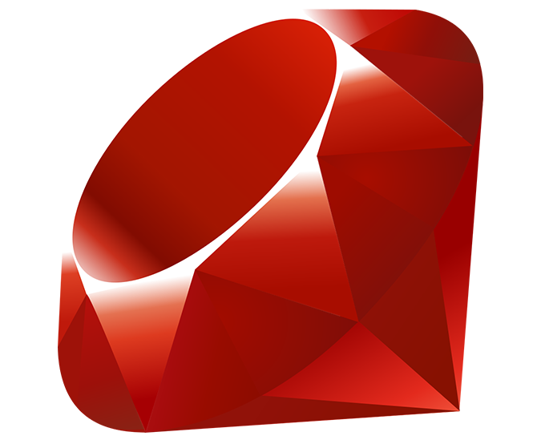

Ruby
Ruby é uma linguagem de programação interpretada multiparadigma,
de tipagem dinâmica e forte, com gerenciamento de memória automático,
originalmente planejada e desenvolvida no Japão em 1995, por Yukihiro
"Matz" Matsumoto, para ser usada como linguagem de script. Matz queria
uma linguagem de script que fosse mais poderosa do que Perl, e mais
orientada a objetos do que Python. Ruby suporta programação funcional,
orientada a objetos, imperativa e reflexiva. Foi inspirada principalmente
por Python, Perl, Smalltalk, Eiffel, Ada e Lisp, sendo muito similar em vários
aspectos a Python. Atualmente, Ruby é a 10ª linguagem de programação mais
popular do mundo, de acordo com o Índice Tiobe.